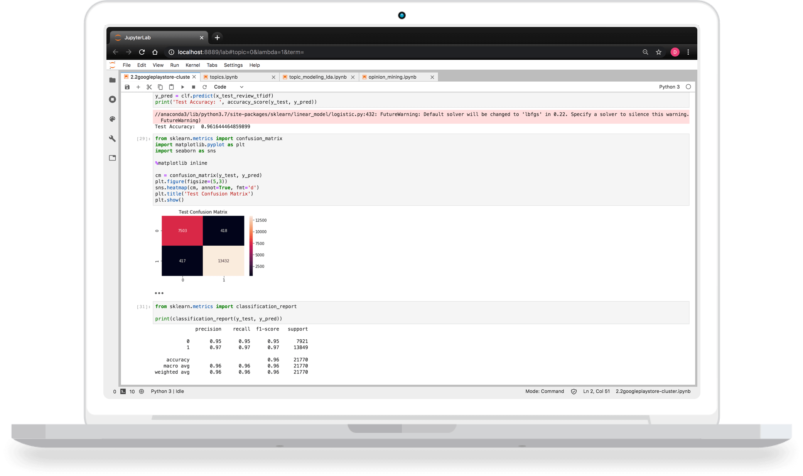
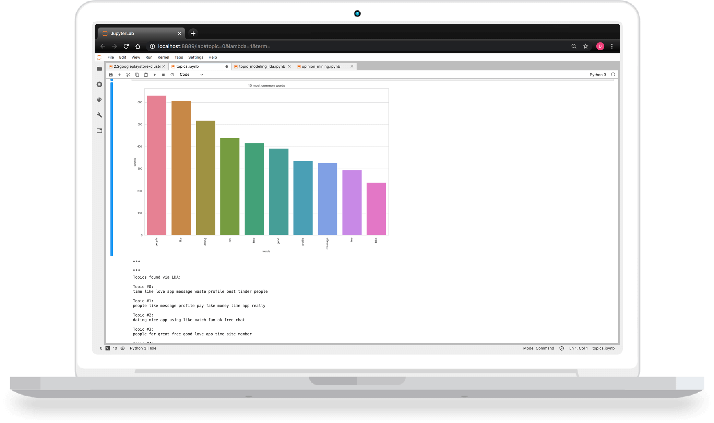
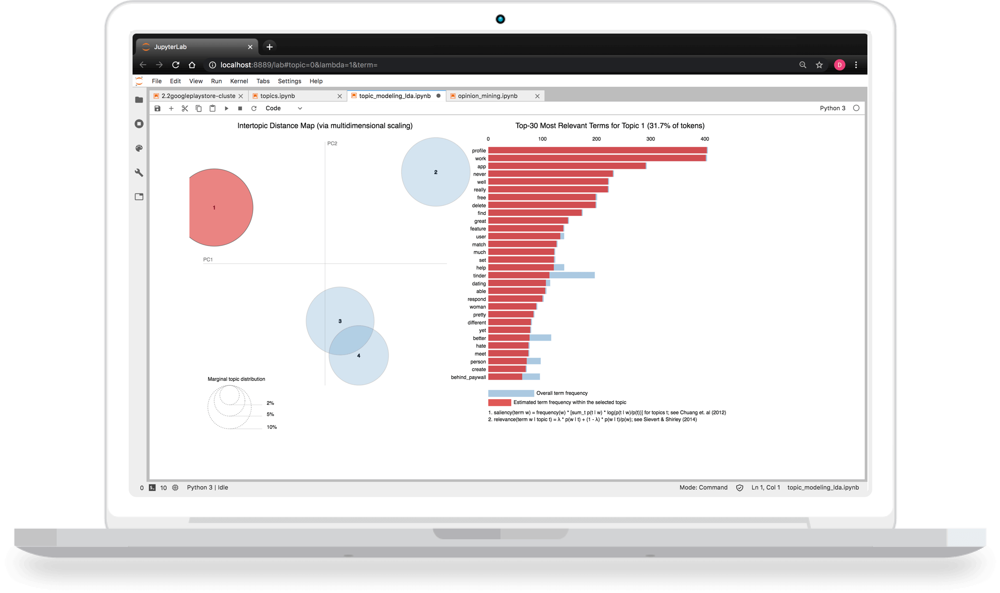

Scroll down for project info.
Data science for good (experiences).
A passion project that started with a Data Science course.
Exploring the overlap between data science and design, looking for practical applications to enhance experience strategy and ROI.
I've been an advocate for data-driven decision making and research/testing for as long as I can remember. However, in leading UX discovery sprints and research strategy, I have to admit there were limitations.
Qualitative UX research costs money, and when funding was a constraint, we got lean to get data. While I'd take some data over no data any day, when it comes to UX, reducing the scope of research can also mean a lost opportunity - the phrase you have to spend money to make money comes to mind.
Now, assuming you have data, let's picture UX synthesis and analysis. Whiteboard and stickies, love em. And those aha moments as you piece it all together, priceless. That said, the analog nature limits the possible scope. There is only so much data and data types that a person can handle, and ultimately, the synthesis (and insights) might have the synthesizer's bias.
Always looking for a better way, and with data becoming bigger, I couldn't help but see a brighter future for experience design.
Natural Language Processing on App Reviews
In Fall 2020 I started to put this dream into code, part-time. With a 10 week time constraint, it was an opportunity to test feasibility. Somewhat comfortable with python, I jumped ahead to NLP. The strategy, if successful, would be to learn text processing for future projects, and use the processed text as input into the required predictive model.
The end goal is to broaden the scope of UX research to include data science. With a holistic data strategy that leverages new data sources, types, and methods of analysis, I hope to enhance experiences and the ROI of design.

Classification of negative (0) and positive (1) reviews with 96% accuracy.
While the model classified test data with 96% accuracy, I got curious and tested it with self-authored reviews. The outcome, was unexpected classification errors. If I wanted to move forward with this model, next steps would be to validate whether this was due to nuance in language and overfitting to the data.
In the search for applications of data science for UX, I moved away from my intitial predictive modelling. Next up was topic modelling, with potential UX applications in affinity mapping and themes. Considering the different app categories within my data set, I first segmented the dataset.
Overall, the outcome of topic modelling did not invalidate the potential for UX, however with single words it lacked the context that makes up an experience. That said, it did get me thinking that there might be value in combining topics with sentiment, as a way to identify customer wants and needs, potentially even a pseudo insight statement to be validated.
While searching google, initially looking to implement topic modelling with multiple words (bi-grams and tri-grams) or sentiment, I stumbled across Aspect-Based Opinion Mining. My current understanding is that this is exactly what I hoped to do. It looks promising but challenging, and there is far less documentation.
Stay tuned for results on Aspect-Based Opinion Mining

Dating app reviews | i. Top 10 words ii. Top 4 topics with sklearn Latent Dirichlet Allocation

Dating app reviews | Interactive topic model visualization with pyLDAvis